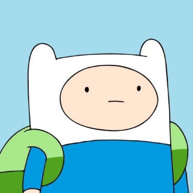
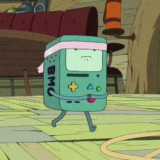

-
Finn
Descrição
O protagonista da série, Finn é um garoto humano aventureiro e corajoso. Ele é sempre ansioso para ajudar os outros e lutar contra o mal. Finn é um pouco ingênuo e impulsivo, mas ele tem um bom coração e sempre faz o que acha certo.
-
Jake

Descrição
O melhor amigo de Finn, Jake é um cachorro mágico com poderes que permitem que ele mude de forma e tamanho. Ele é sábio, engraçado e sempre disposto a ajudar Finn em suas aventuras. Jake também é um pouco preguiçoso e comilão, mas ele é um amigo leal e confiável.
-
Bimo
Descrição
Ele é um console de videogame portátil que pode tocar música, exibir vídeos, jogar jogos e muito mais. BMO também é senciente e tem sua própria personalidade, que é descrita como sendo amigável, otimista e um pouco ingênua.
-
Princesa jujuba

Descrição
A princesa do Reino Doce, a Princesa Jujuba é uma cientista e inventora inteligente. Ela é muitas vezes chamada para ajudar Finn e Jake em suas aventuras. A Princesa Jujuba é gentil e compassiva, mas ela também pode ser um pouco mandona e teimosa.
-
Princesa de fogo

Descrição
Também conhecida como Phoebe, é uma personagem cativante da série animada Hora de Aventura. Filha do Rei de Fogo e princesa do Reino de Fogo, ela se destaca por sua personalidade vibrante e poderes flamejantes.
-
Marceline
Descrição
Um vampiro que toca baixo, Marceline é amiga de Finn e Jake. Ela é sarcástica e cínica, mas ela também tem um lado gentil e compassivo. Marceline tem um passado misterioso e muitas vezes luta com sua identidade como vampiro.
-
Rei Gelado

Descrição
Um vilão da série, o Rei Gelado é um rei solitário que está obcecado em se casar com a Princesa Jujuba. Ele frequentemente sequestra princesas e tenta forçá-las a se casar com ele. O Rei Gelado é louco e excêntrico, mas ele também é tragicamente solitário e anseia por amor.